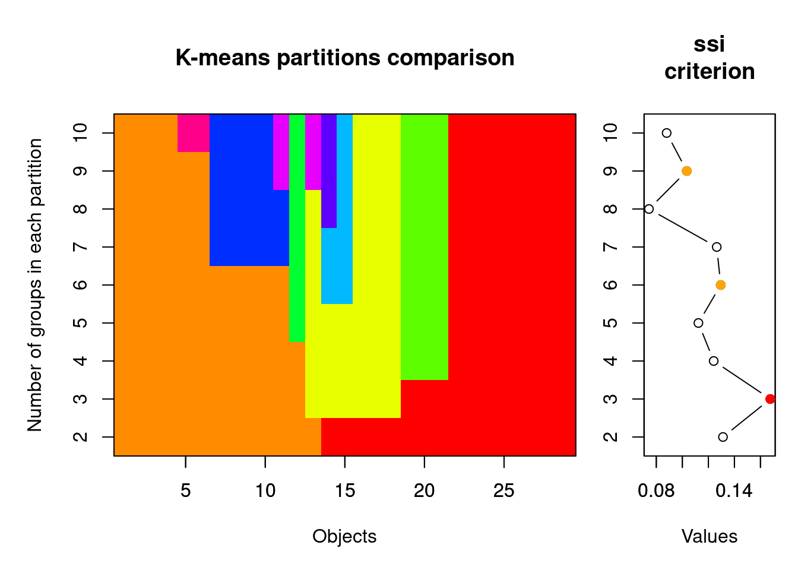

Capítulo 4 K-means e agrupamentos não-hierarquicos
4.1 Backgorund da análise
K-means é um tipo de agrupamento não hierarquico porque não busca obter grupos menores que por sua vez pertencem a grupos maiores. Resumidamente, podemos calcular o K-means apartir de uma matriz quadrada ou de distância. Essa técnica procura particionar os objetos em k grupos de maneira a minimizar a soma de quadrados entre grupos e maximizá-la dentro dos grupos. Um critério similar ao de uma ANOVA.
4.2 Exemplo 1:
Pergunta:
Qual é o número de grupos que melhor sumariza o padrão de ocorrência de espécies de peixes ao longo de um riacho?
Predições
- 1: O agrupamento ideal para explicar a variância no padrão de ocorrência de espécies é 4.
Variáveis
- Variáveis resposta
- Para este exemplo iremos utilizar um conjunto de dados disponível no pacote
ade4que contém dados de 27 espécies de peixes coletados em 30 pontos ao longo do Rio Doubs, na fronteira entre a França e Suiça.
- Para este exemplo iremos utilizar um conjunto de dados disponível no pacote
4.2.1 Explicação da análise
Um diferencial do K-means em relação aos agrupamentos hierarquicos (=clusters) é que o usuário pode escolher antecipadamente o número de grupos que quer formar.
Checklist
- Vamos normalizar os dados de abundância antes de entrar na análise propriamente, já que existem muitos zeros na matriz.
4.2.2 Análise
## Cogo Satr Phph Neba Thth Teso Chna Chto Lele Lece Baba Spbi Gogo Eslu Pefl
## 1 0 3 0 0 0 0 0 0 0 0 0 0 0 0 0
## 2 0 5 4 3 0 0 0 0 0 0 0 0 0 0 0
## 3 0 5 5 5 0 0 0 0 0 0 0 0 0 1 0
## 4 0 4 5 5 0 0 0 0 0 1 0 0 1 2 2
## 5 0 2 3 2 0 0 0 0 5 2 0 0 2 4 4
## 6 0 3 4 5 0 0 0 0 1 2 0 0 1 1 1
## Rham Legi Scer Cyca Titi Abbr Icme Acce Ruru Blbj Alal Anan
## 1 0 0 0 0 0 0 0 0 0 0 0 0
## 2 0 0 0 0 0 0 0 0 0 0 0 0
## 3 0 0 0 0 0 0 0 0 0 0 0 0
## 4 0 0 0 0 1 0 0 0 0 0 0 0
## 5 0 0 2 0 3 0 0 0 5 0 0 0
## 6 0 0 0 0 2 0 0 0 1 0 0 0spe <- doubs$fish[-8,]# retiro a linha 8, pois não há dados
spe.norm <- decostand(spe, "normalize") # função do pacote vegan, ela faz várias padronizações, aqui ele normaliza O argumento centers na função abaixo indica o número de grupos que se quer formar. Neste exemplo estamos utilizando centers=4.
## K-means clustering with 4 clusters of sizes 8, 6, 3, 12
##
## Cluster means:
## Cogo Satr Phph Neba Thth Teso
## 1 0.00000000 0.006691097 0.02506109 0.06987391 0.006691097 0.006691097
## 2 0.06167791 0.122088022 0.26993915 0.35942538 0.032664966 0.135403325
## 3 0.00000000 0.000000000 0.00000000 0.00000000 0.000000000 0.000000000
## 4 0.10380209 0.542300691 0.50086515 0.43325916 0.114024105 0.075651573
## Chna Chto Lele Lece Baba Spbi Gogo
## 1 0.10687104 0.09377516 0.14194394 0.2011411 0.24327992 0.1326062 0.28386032
## 2 0.06212775 0.21568957 0.25887226 0.2722562 0.15647062 0.1574388 0.16822286
## 3 0.05205792 0.00000000 0.07647191 0.3166705 0.00000000 0.0000000 0.20500174
## 4 0.00000000 0.00000000 0.06983991 0.1237394 0.02385019 0.0000000 0.05670453
## Eslu Pefl Rham Legi Scer Cyca Titi
## 1 0.20630360 0.16920496 0.2214275 0.19066542 0.13171275 0.16019126 0.26230024
## 2 0.12276089 0.17261621 0.0793181 0.06190283 0.04516042 0.06190283 0.14539027
## 3 0.07647191 0.00000000 0.0000000 0.05205792 0.07647191 0.00000000 0.00000000
## 4 0.04722294 0.02949244 0.0000000 0.00000000 0.00000000 0.00000000 0.03833408
## Abbr Icme Acce Ruru Blbj Alal Anan
## 1 0.19561641 0.1331835 0.26713081 0.32103755 0.22883055 0.3326939 0.18873077
## 2 0.01473139 0.0000000 0.03192175 0.32201597 0.01473139 0.1095241 0.04739636
## 3 0.00000000 0.0000000 0.18058775 0.31667052 0.05205792 0.7618709 0.00000000
## 4 0.00000000 0.0000000 0.00000000 0.01049901 0.00000000 0.0000000 0.00000000
##
## Clustering vector:
## 1 2 3 4 5 6 7 9 10 11 12 13 14 15 16 17 18 19 20 21 22 23 24 25 26 27
## 4 4 4 4 2 4 4 2 4 4 4 4 4 4 2 2 2 2 1 1 1 3 3 3 1 1
## 28 29 30
## 1 1 1
##
## Within cluster sum of squares by cluster:
## [1] 0.4696535 1.7361453 0.3560423 2.5101386
## (between_SS / total_SS = 66.7 %)
##
## Available components:
##
## [1] "cluster" "centers" "totss" "withinss" "tot.withinss"
## [6] "betweenss" "size" "iter" "ifault"O objeto que fornece o resultado contém: 1) o tamanho (número de objetos) em cada um dos 4 grupos; 2) o centroid de cada grupo e o pertencimento de cada espécie a cada grupo; e 3) o quando da Soma de Quadrados dos dados é explicada por esta conformação de grupos.
No entanto, não é possível saber a priori qual o número ideal de grupos. Para descobrir isso repetimos o k-means com uma série de valores de K. Isso pode ser feito na função cascadeKM.
Tanto calinski quando ssi são bons critérios para encontrar o número ideal de grupos. Quanto maior o valor de ssi melhor (veja ?cascadeKM mais detalhes).
## 2 groups 3 groups 4 groups 5 groups 6 groups 7 groups 8 groups
## SSE 8.2149405 6.4768108 5.0719796 4.3015573 3.5856120 2.9523667 2.4840549
## ssi 0.1312111 0.1675852 0.1233266 0.1110514 0.1158374 0.1443726 0.1280139
## 9 groups 10 groups
## SSE 2.052189 1.75992916
## ssi 0.107325 0.08040969SSE: critério utilizado pelo algorítimo para achar o agrupamento ótimo dos objetos.

Este resultado nos mostra que o número ideal de grupos é 3, vejam que o SSI máximo é alcançado neste número de grupos 0.1675852 (também indicado pela bola vermelha no plot).
#Espécies indicadoras
4.3 Backgorund da análise
Uma pergunta normalmente feita por ecólogos é: qual espécie pode ser indicadora de uma determinada condição ambiental?
O índice IndVal mede dois aspectos das espécies: Especificidade e fidelidade. Uma alta fidelidade significa que espécies ocorrem em todos os locais do grupo e uma alta especificidade significa que as espécies ocorrem somente naquele grupo. Uma boa espécie indicadora é aquela na qual todos os indivíduos ocorrem em todas a amostras referentes a um grupo específico. A Especificidade é dada pela divisão da abundancia média da espécie no grupo pela somatória das abundancias médias dos grupos. Fidelidade é igual ao número de lugares no grupo onde a espécie está presente dividido pelo número total de lugares do grupo (Dufrêne & Legendre, 1997).
Espécies raras podem receber o mesmo valor de IndVal das espécies indicadoras e são chamadas de indicadoras assimétricas, i.e., contribuem com a especificidade do habitat mas não servem para predizer grupos. Ao contrário, as espécies indicadoras são verdadeiros indicadores simétricos e podem ser usadas para predizer grupos.
4.4 Exemplo 1:
Pergunta:
Qual espécie de anfíbio anuro na fase larval pode ser indicadora da fitofisionomia onde é encontrada?
Predições
- 1: Espécies terrestres serão indicadoras de área aberta, enquanto espécies arborícolas serão indicadoras de áreas florestais.
Variáveis
- Variáveis resposta
- Mesma matriz já utilizada contendo a abundância de girinos ao longo de poças na Serra da Bocaina.
4.4.1 Explicação da análise
A análise procede da seguinte forma:
- Uma matriz de distância é construída e as unidades amostrais são classificadas com alguma análise de agrupamento, hierárquico ou não;
- A variável ambiental para a qual se deseja classificar os grupos é inserida;
- As espécies indicadoreas de cada grupo são formadas através do cálculo da especificidade e fidelidade, obtendo-se o valor de IndVal para cada espécie;
- Por fim, o conjunto de dados originais é comparado para ver se análise faz sentido.
O cálculo da significância do índice de IndVal é feito por aleatorização de Monte Carlo. Assim, o valor do índice é aleatorizado 999 vezes (ou o número de vezes que você optar) dentro dos tratamentos e o valor de P é dado pelo número de vezes em que o índice observado foi igual ou maior que os valores aleatorizados.
4.4.2 Análise
O IndVal está disponível tanto no pacote indicspecies quando no labdsv. Para este exemplo iremos usar o labdsv.
Primeiro vamos agrupar as unidades amostrais (poças) que informa os grupos de fitofisionomias onde as poças se localizam e para os quais deseja-se encontrar espécies indicadoras:
resultado <- indval(bocaina, fitofis)
summary(resultado)#só exibe o resultado para as espécies indicadoras## cluster indicator_value probability
## Rict 1 0.8364 0.015
## Sduar 1 0.7475 0.038
## Bahe 2 0.6487 0.047
##
## Sum of probabilities = 8.033
##
## Sum of Indicator Values = 7.3
##
## Sum of Significant Indicator Values = 2.23
##
## Number of Significant Indicators = 3
##
## Significant Indicator Distribution
##
## 1 2
## 2 1Para apresentar uma tabela dos resultados para todas as espécies temos de processar os dados:
## Aper Bahe Rict Cleuco Dmic Dmin Hpoly Lfur Pbar Polf
## 3 2 1 3 3 1 2 3 1 3
## Pmelano Sduar Shay Sobt Ssqual Bokerm
## 2 1 3 2 3 2## Aper Bahe Rict Cleuco Dmic Dmin Hpoly Lfur
## 0.2432796 0.6487329 0.8363823 0.4128631 0.6645244 0.7032145 0.6208711 0.2279412
## Pbar Polf Pmelano Sduar Shay Sobt Ssqual Bokerm
## 0.2813725 0.2437500 0.2500000 0.7474527 0.4930269 0.2222222 0.2500000 0.4583333## Aper Bahe Rict Cleuco Dmic Dmin Hpoly Lfur Pbar Polf
## 1.000 0.047 0.015 0.432 0.199 0.103 0.264 1.000 0.606 1.000
## Pmelano Sduar Shay Sobt Ssqual Bokerm
## 1.000 0.038 0.383 0.701 1.000 0.245tab.resultado=cbind(resultado$maxcls,resultado$indcls,resultado$pval)
colnames(tab.resultado)<-c("maxgrp", "ind. value","P")
tab.resultado## maxgrp ind. value P
## Aper 3 0.2432796 1.000
## Bahe 2 0.6487329 0.047
## Rict 1 0.8363823 0.015
## Cleuco 3 0.4128631 0.432
## Dmic 3 0.6645244 0.199
## Dmin 1 0.7032145 0.103
## Hpoly 2 0.6208711 0.264
## Lfur 3 0.2279412 1.000
## Pbar 1 0.2813725 0.606
## Polf 3 0.2437500 1.000
## Pmelano 2 0.2500000 1.000
## Sduar 1 0.7474527 0.038
## Shay 3 0.4930269 0.383
## Sobt 2 0.2222222 0.701
## Ssqual 3 0.2500000 1.000
## Bokerm 2 0.4583333 0.245No resultado podemos ver que temos duas espécies indicadoras da fitofisionimia 1: Rhinella icterica (Rict) e Scinax duartei (Sduar). Nenhuma espécie foi indicadora dos outros grupos neste exemplo.